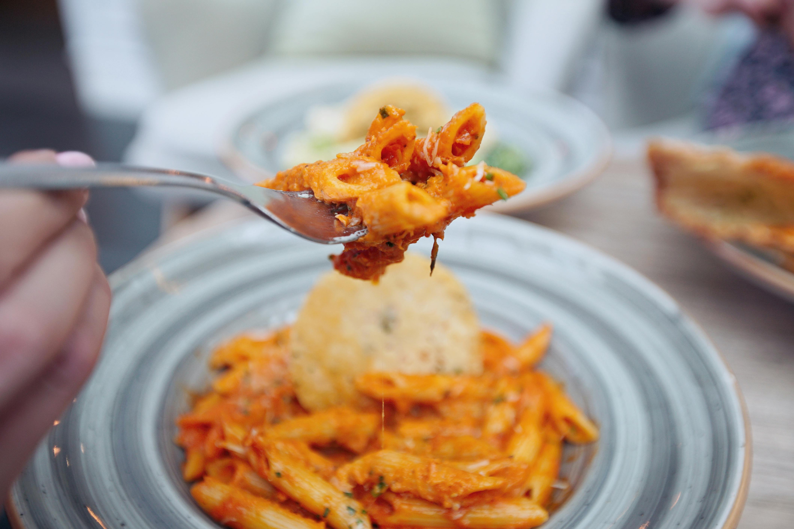

Penne Turkey Marinara

Description
- Time: Approximately 2 hours
- Calories: 500 - 700
- Servings: 4
Ingredients
- 200 grams of penne
- 2 pounds of ground turkey
- 2 cans of San Marzano tomatoes
- 1/2 of a medium yellow onion
- 3 tablespoons of fresh grated parmesan cheese
- 8 cloves of garlic
- 1/3 cup of fresh basil leaves
Steps
Marinara Sauce
- Use your hands to crush tomatoes with sauce in a large bowl. Set aside.
- Dice onion and mince garlic.
- Heat a large pot on medium-low flame. Add olive oil and diced onion with pinch of salt. Cook for about 10 minutes until onions are sauted.
- Add minced garlic and stir for about 1 minute.
- Add tomatoes and sauce to pot and stir.
- Add basil and bring to gentle simmer.
- Let the sauce simmer for 1 to 2 hours with the lid partially covered. Let cook until sauce has reduced to your liking.
Pasta and Turkey
- Place ground turkey in a large pan on medium heat.
- Crush with wooden spatula until turkey has cooked into small golden-brown clusters.
- Cook pasta in a separate pot according to label's instructions.
- Add sauce, turkey, and pasta to one bowl and serve with grated parmesan.
Home